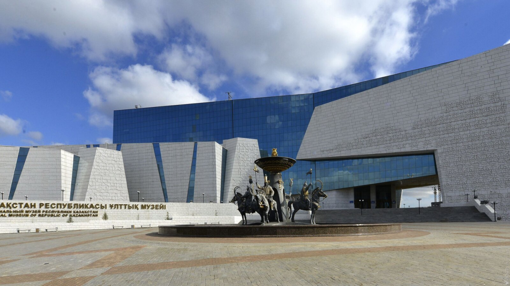

Social Transformations Under Russian Colonial Administrative Codes
An Analytical Study of Governance, Identity, and Power in 18th–19th Century Kazakhstan
Historical Context: The Russian Expansion into the Kazakh Steppe
The incorporation of the Kazakh Steppe into the Russian Empire was a gradual process that unfolded over more than a century, fundamentally transforming the political, social, and economic landscape of Central Asia. Beginning in the early 18th century with diplomatic overtures and culminating in comprehensive administrative reforms by the mid-19th century, this colonial expansion represented one of the most significant geopolitical shifts in the region's history.
Early Contact Period (1731–1800s)
The initial phase of Russian-Kazakh relations began with the oath of allegiance by Khan Abulkhair of the Younger Zhuz in 1731, seeking Russian protection against Dzungar invasions. This marked the beginning of a complex relationship that would evolve from nominal protectorate status to complete administrative integration. During this period, Russian influence remained largely diplomatic and military, with limited interference in internal Kazakh affairs.
Administrative Penetration (1800s–1840s)
The early 19th century witnessed increased Russian administrative presence through the establishment of military fortifications and the gradual erosion of traditional Kazakh political autonomy. The construction of the Orenburg and Siberian defensive lines created physical infrastructure for colonial governance while simultaneously disrupting traditional nomadic migration routes.
Comprehensive Reform Era (1867–1891)
The watershed moment came with the promulgation of comprehensive administrative statutes in 1867–1868, which fundamentally restructured governance in the steppe regions. These reforms abolished the traditional khan system entirely and imposed a bureaucratic colonial administration modeled on Russian provincial governance.
Kazakh Society Before Colonial Reforms
To understand the magnitude of social transformation under colonial rule, it is essential to examine the sophisticated social, political, and legal systems that existed in Kazakh society prior to Russian intervention. Far from the "lawless steppe" often portrayed in colonial narratives, pre-colonial Kazakh society possessed complex institutions of governance, justice, and social organization.
The Zhuz System: Territorial and Political Organization
Kazakh society was organized into three major territorial-tribal confederations known as zhuz (hordes): the Uly Zhuz (Great Horde) in the southeast, the Orta Zhuz (Middle Horde) in the north and east, and the Kishi Zhuz (Younger Horde) in the west. Each zhuz comprised numerous tribes and clans, creating a multilayered system of social organization that balanced collective identity with local autonomy.
This structure was not merely administrative but reflected deep historical, genealogical, and territorial connections. The zhuz system provided both political organization and social identity, functioning as the primary framework through which Kazakhs understood their place in society.
Traditional Leadership and Authority
Political authority in pre-colonial Kazakh society was distributed across multiple levels. At the apex stood the khan, who wielded considerable symbolic authority but whose practical power was constrained by the consensus of influential tribal leaders. Below the khan, sultans (members of the Chingissid dynasty) held hereditary noble status, while biys served as elected or acknowledged leaders of smaller tribal units.
Crucially, authority in this system derived from social legitimacy, personal prestige, genealogical claims, and demonstrated leadership rather than bureaucratic appointment. Leaders maintained their positions through their ability to mediate disputes, organize collective defense, and maintain the prosperity of their followers. This created a flexible, decentralized system that could adapt to the nomadic lifestyle and environmental pressures of the steppe.
Adat: Customary Law and Justice
The legal foundation of Kazakh society rested on adat, a comprehensive system of customary law developed over centuries. Adat governed everything from property relations and marriage customs to criminal justice and inter-tribal conflicts. The most famous codification of these traditions was the Zhety Zhargy (Seven Codes), attributed to Khan Tauke in the late 17th century.
Dispute resolution under adat was conducted by biys who served as judges-arbitrators. These biys were renowned for their knowledge of customary law, rhetorical skill, and wisdom. Their decisions were based on precedent, community values, and the specific circumstances of each case rather than written statutes. The adat system emphasized restorative justice and community harmony over punitive measures.
Economic and Social Relations
The nomadic pastoral economy shaped all aspects of Kazakh social life. Land was not owned individually but utilized collectively, with different tribes and clans holding customary rights to specific seasonal pastures. Livestock served as the primary form of wealth, and social status was measured partly through herd size and quality.
Social stratification existed but remained relatively fluid compared to sedentary agricultural societies. The distinction between wealthy livestock owners and poorer herders was significant, yet membership in a clan provided certain social security regardless of individual wealth. The institution of zhailu (collective herding) and various forms of mutual assistance maintained social cohesion.
Introduction of Russian Administrative Codes
The imposition of Russian administrative codes on the Kazakh Steppe represented a systematic attempt to transform a nomadic society organized around kinship and custom into a sedentary, bureaucratic entity governed by imperial law. This transformation was achieved through a series of legislative acts and administrative reforms that fundamentally restructured political authority, land relations, and legal systems.
The 1822 Statute on the Siberian Kirghiz
Drafted by Mikhail Speransky, the 1822 Statute represented the first comprehensive attempt to codify Russian administrative control over Kazakh territories, specifically targeting the regions that would become part of the Siberian administration. This statute introduced a hierarchical administrative structure that divided the steppe into okrugs (districts) and volosts (rural administrative units).
The statute transformed traditional Kazakh leaders into appointed officials of the imperial bureaucracy. While maintaining the titles of "sultan" and "starshina" (elder), these positions became subject to Russian approval and supervision. Traditional leaders were now required to implement imperial policies, collect taxes, and serve as intermediaries between colonial administration and local populations.
The 1867–1868 Administrative Reforms
The most comprehensive transformation came with the administrative statutes of 1867 (for the Steppe Region) and 1868 (for Turkestan). These reforms, implemented under Governor-General von Kaufman and the reformist policies of Tsar Alexander II, completely abolished the traditional khan system and imposed direct Russian bureaucratic control.
The steppe was reorganized into oblasts (provinces) and uezds (counties), mirroring the administrative structure of metropolitan Russia. Russian officials occupied all senior administrative positions, while Kazakhs could serve only in subordinate roles. The reforms established a vertical hierarchy of authority flowing from the imperial center to the most remote administrative units.
Key Features of Administrative Codes
- Abolition of khan authority and traditional governance
- Creation of territorial-administrative units
- Introduction of Russian imperial law
- Establishment of colonial bureaucracy
- Taxation and census systems
- Integration into Russian economic system
Stated Colonial Objectives
- "Civilizing mission" and cultural assimilation
- Economic integration and resource extraction
- Sedentarization of nomadic populations
- Prevention of inter-tribal conflicts
- Strategic control of Central Asia
- Buffer against British expansion
Legal Integration: From Adat to Imperial Law
The administrative codes fundamentally altered the legal landscape by subordinating customary law to Russian imperial law. While the 1867–1868 statutes theoretically allowed customary law to continue for certain civil matters among the native population, in practice imperial law increasingly superseded traditional legal practices.
The establishment of uezd courts with Russian judges created parallel and superior legal institutions that undermined the authority of traditional biys. Criminal cases were removed entirely from customary jurisdiction and placed under Russian criminal law, fundamentally altering concepts of justice, punishment, and legal procedure.
Archival Sources and Material Evidence
The National Museum of Kazakhstan preserves extensive archival materials that document the implementation and impact of colonial administrative reforms. These materials include official statutes, administrative correspondence, census records, land surveys, and personal testimonies that provide insight into how colonial governance functioned in practice.
Documentary Evidence
Official documents reveal the systematic nature of colonial administration. Census records show the bureaucratic categorization of the population, transforming fluid tribal identities into fixed administrative categories. Tax registers document the economic burden placed on nomadic populations and the mechanisms of resource extraction. Correspondence between colonial officials reveals attitudes toward the native population and the challenges of implementing reforms.
Cartographic Materials
Maps from the colonial period are not merely neutral representations of space but instruments of colonial power. Russian cartographers imposed grid-like administrative divisions onto the fluid geography of nomadic life, creating boundaries where none had existed. These maps reflected and reinforced the colonial vision of a controlled, legible, and exploitable territory.
Symbolic Objects of Colonial Authority
Material objects preserved in the museum collection include official seals, medals, uniforms, and other paraphernalia of colonial administration. These objects embodied the symbolic authority of the empire and marked the transformation of traditional leaders into bureaucratic functionaries. The visual culture of colonialism played a crucial role in establishing and maintaining imperial dominance.
Social Transformations: Detailed Analysis
The implementation of Russian administrative codes triggered cascading social transformations that affected every aspect of Kazakh life. These changes were not merely administrative but fundamentally altered power relations, economic systems, social structures, and cultural identities.
Transformation of Power and Authority
Perhaps the most immediate and visible transformation was the restructuring of political authority. Traditional leaders who derived their legitimacy from genealogical claims, personal prestige, and community support found themselves displaced by or subordinated to Russian-appointed administrators whose authority derived from bureaucratic position.
The abolition of the khan system eliminated the symbolic center of Kazakh political identity. Khans had served not only as political leaders but as embodiments of historical continuity and collective identity. Their removal created a vacuum in traditional political structures that was filled by colonial bureaucracy rather than indigenous institutions.
Those traditional leaders who were incorporated into the colonial administration faced a fundamental transformation of their role and responsibilities. As appointed officials, they became agents of colonial policy rather than representatives of their communities. This created tensions and contradictions as they navigated between colonial expectations and traditional obligations.
Land Relations and Economic Transformation
The introduction of Russian concepts of land ownership fundamentally altered the relationship between Kazakhs and their territory. The colonial administration sought to transform communal, seasonal land use patterns into fixed property relations amenable to taxation and control.
Traditional zhailyau (summer pastures), kystauy (winter pastures), and migration routes were disrupted by the creation of administrative boundaries and the allocation of land to Russian settlers. The Steppe Statute of 1891 declared all "surplus" land to be state property, opening vast territories for Russian agricultural colonization.
This land policy had devastating consequences for nomadic pastoralism. As prime pastureland was alienated to settlers, Kazakhs were forced into marginal territories inadequate to support their herds. The reduction in available pastureland contributed to overgrazing, environmental degradation, and economic impoverishment. The inability to maintain traditional migration patterns disrupted the careful ecological balance that nomadic pastoralism had maintained for centuries.
Economic stratification intensified under colonial rule. Wealthy Kazakhs who could navigate the new system and establish relations with colonial authorities accumulated land and resources, while poorer herders lost access to traditional support networks and economic opportunities. The monetization of the economy through taxation and market integration further disadvantaged those unable to adapt to commercial relations.
Legal System Transformation
The subordination of adat to Russian imperial law fundamentally altered concepts of justice, legal procedure, and community relations. The introduction of written, codified law contrasted sharply with the flexible, precedent-based system of customary law.
Russian courts operated according to entirely different principles than traditional biy courts. Where biys emphasized reconciliation, restoration of community harmony, and compensation to victims, Russian criminal law emphasized punishment, deterrence, and state authority. The concept of imprisonment, virtually unknown in traditional Kazakh society, became a standard punishment under colonial law.
The legal transformation also affected civil relations. Marriage, inheritance, property disputes, and other civil matters were increasingly subject to Russian legal norms rather than customary practices. This created particular tensions in family law, where Russian and Islamic influences competed with traditional Kazakh customs.
Access to justice became stratified by social position and familiarity with the colonial system. Those with connections to colonial authorities, education in Russian, or economic resources to navigate bureaucratic procedures gained advantages in legal proceedings. Traditional communal approaches to dispute resolution gave way to individualized, bureaucratic legal processes.
Social Stratification and Class Formation
Colonial policies accelerated processes of social stratification and contributed to the emergence of new social classes. A small native administrative elite emerged, composed of traditional nobility and wealthy Kazakhs who collaborated with colonial authorities. This group gained privileged access to education, administrative positions, and economic opportunities.
The colonial education system created a small educated stratum exposed to Russian culture and European ideas. This Kazakh intelligentsia occupied an ambiguous position, often critical of colonial policies while simultaneously dependent on the colonial system for their social position. Many would later become leaders of national movements.
At the other end of the social spectrum, impoverishment and proletarianization affected large segments of the population. Loss of pastureland, livestock diseases, taxation burdens, and environmental degradation forced many Kazakhs to abandon nomadic pastoralism. Some became agricultural laborers on Russian settler farms, others sought work in mining or urban centers, creating a nascent Kazakh working class.
Gender Relations and Family Structures
Colonial policies and social transformations affected gender relations and family structures in complex ways. Russian administrators often viewed Kazakh gender practices through the lens of their own cultural assumptions, particularly regarding women's status and family organization.
The colonial administration interfered in marriage practices, particularly regarding kalym (bride price) and early marriages, viewing these as barbaric customs that needed reform. While some interventions may have protected women from exploitation, they also disrupted traditional family structures and women's roles within them.
Economic transformations affected gender roles as the shift from nomadic pastoralism to sedentary agriculture and wage labor altered traditional divisions of labor. Women's economic contributions and social positions changed as household economies transformed, though these changes varied greatly by social class and region.
Cultural and Spiritual Consequences
Beyond the visible administrative and economic changes, colonial reforms triggered profound transformations in cultural identity, spiritual authority, religious practice, and collective memory. These changes were perhaps the most enduring legacy of colonialism, affecting how Kazakhs understood themselves and their place in the world.
Transformation of Cultural Identity
The imposition of Russian administrative categories and census classifications transformed fluid, multilayered identities into fixed, bureaucratic categories. Colonial ethnography categorized Kazakhs as a distinct "nationality" within the empire's classificatory scheme, emphasizing differences from other Turkic peoples in ways that did not necessarily reflect indigenous understandings of identity.
The colonial education system promoted Russian language and culture while marginalizing Kazakh cultural practices. Russian became the language of administration, law, and social advancement, creating diglossia where Kazakh was relegated to domestic and informal spheres while Russian dominated public and official contexts.
Traditional cultural practices faced both direct prohibition and gradual erosion. Certain customary practices were banned as "backward" or incompatible with imperial law. Others declined as the social and economic conditions that sustained them disappeared. The oral tradition, central to Kazakh cultural transmission, was challenged by written, Russian-language education systems.
Religious Authority and Islamic Identity
Russian colonial policy toward Islam in the Kazakh Steppe was complex and often contradictory. While the empire presented itself as a defender of Orthodox Christianity, it also sought to co-opt Islamic institutions for administrative purposes through the creation of a Muslim Spiritual Assembly under state control.
The colonial administration alternately encouraged and suppressed Islamic practices depending on political calculations. Education policy promoted Russian Orthodox missionary activity while attempting to prevent what authorities viewed as "fanaticism." These contradictory policies created tensions and uncertainties in religious life.
The role of mullahs and Islamic scholars in Kazakh society became increasingly complicated. Some were incorporated into the colonial administrative apparatus, others maintained independence and occasionally led resistance movements, while many navigated a careful middle path between colonial authorities and their communities.
Collective Memory and Historical Consciousness
Perhaps the most subtle but profound transformation was in collective memory and historical consciousness. Colonial narratives presented Russian expansion as a civilizing mission bringing order, progress, and development to a backwards, anarchic steppe. These narratives erased or distorted the complex histories, sophisticated institutions, and rich cultural traditions of pre-colonial Kazakh society.
Indigenous historical memory was preserved through oral tradition, particularly the epic poetry of zhyrau (traditional bards) and akyns (improvisational poets). However, the disruption of traditional social structures and the introduction of written, Russian-language education gradually undermined these traditions of cultural transmission.
The creation of written Kazakh histories by colonial ethnographers and educated Kazakhs represented both an effort to preserve indigenous knowledge and an accommodation to colonial forms of knowledge production. These works navigated between indigenous perspectives and the expectations of Russian audiences and authorities.
Resistance and Adaptation
The imposition of colonial administrative codes was not accepted passively. Throughout the colonial period, Kazakhs engaged in various forms of resistance, ranging from armed uprisings to everyday acts of non-cooperation, while simultaneously developing strategies of adaptation and negotiation.
Armed Resistance Movements
The most dramatic form of resistance came through armed uprisings against colonial rule. Major rebellions included the uprising led by Kenesary Kasymov (1837–1847), who attempted to restore the khan system and resist Russian encroachment, and the 1916 Central Asian Revolt against forced conscription into labor battalions during World War I.
These uprisings were typically crushed by superior Russian military force, yet they demonstrated the depth of resistance to colonial transformation and preserved memories of autonomous political organization. The stories of these resistance movements became important elements of nationalist narratives in the 20th century.
Everyday Resistance and Non-Cooperation
Beyond spectacular uprisings, colonialism faced constant everyday resistance. Kazakhs evaded taxation through various strategies, ignored administrative boundaries in maintaining traditional migration routes, and continued to resolve disputes through customary law despite the existence of colonial courts.
Traditional leaders maintained informal authority even when stripped of official positions. Communities preserved customary practices in spite of official prohibition. These forms of resistance were less visible than armed uprisings but perhaps more effective in maintaining cultural continuity and limiting colonial penetration into daily life.
Adaptation and the Emergence of National Consciousness
Many Kazakhs, particularly the emerging educated elite, sought to navigate the colonial system through adaptation while working to preserve and develop Kazakh culture and identity. The Jadid movement promoted educational reform and cultural modernization as means of strengthening Kazakh society.
Educated Kazakhs like Shoqan Walikhanov, Ybray Altynsarin, and Abai Qunanbaiuly used their positions within the colonial system to document Kazakh culture, develop written Kazakh literature, and advocate for educational opportunities. Their work laid foundations for modern Kazakh national identity.
The Alash Orda movement of the early 20th century represented the culmination of these developments, combining Western political ideas with Kazakh cultural nationalism to advocate for autonomy within a reformed Russian state. Though ultimately unsuccessful in achieving its goals, Alash Orda demonstrated how colonial experiences catalyzed the development of modern national consciousness.
Long-Term Legacy and Contemporary Relevance
The social transformations initiated by Russian colonial administrative codes continued to shape Kazakhstan long after the end of formal colonial rule. Understanding this history remains essential for comprehending contemporary Kazakhstan's social structures, political culture, and national identity.
Soviet Continuities
The Soviet period, while ideologically distinct from tsarist colonialism, inherited and intensified many colonial patterns. Soviet administrative structures built upon tsarist foundations, collective farm boundaries often reflected earlier settler agriculture patterns, and Soviet nationalities policy operated within ethnic categories established during the colonial period.
The catastrophic famine of 1930–1933, which killed approximately a quarter of the Kazakh population, resulted partly from forced sedentarization and collectivization policies that echoed earlier colonial efforts to transform nomadic society. The trauma of this period remained deeply embedded in collective memory.
Post-Independence Reckoning
Since independence in 1991, Kazakhstan has engaged in complex processes of historical reckoning with its colonial past. Official historiography has emphasized resistance heroes and cultural continuity while the state has worked to restore and promote Kazakh language and culture.
However, the legacies of colonialism remain evident in contemporary society. Russian remains widely used in urban areas and professional contexts. Administrative boundaries established in the colonial and Soviet periods persist. Social and economic structures bear the imprint of more than a century of colonial transformation.
Lessons for Contemporary Scholarship
The study of Russian colonialism in Kazakhstan offers broader lessons for understanding colonialism, imperialism, and their legacies. It demonstrates how colonial governance operates not just through military force but through administrative systems that reshape social relations, economic structures, and cultural identities.
This history also reveals the resilience and creativity of colonized peoples in resisting, adapting to, and ultimately surviving colonial domination. The preservation of Kazakh language, culture, and identity despite intensive colonial pressure testifies to the strength of indigenous cultural traditions and collective determination.
Conclusion: Toward Critical Historical Understanding
The imposition of Russian colonial administrative codes on the Kazakh Steppe in the 18th and 19th centuries initiated profound and lasting social transformations. These reforms were not merely bureaucratic reorganizations but systematic efforts to reshape Kazakh society according to imperial designs.
The transformation of political authority from decentralized, consensus-based systems to hierarchical bureaucratic control; the disruption of nomadic pastoralism through land alienation and administrative boundaries; the subordination of customary law to imperial legal codes; and the erosion of traditional cultural practices and identities—all of these changes fundamentally altered Kazakh society.
Yet this history is not simply one of domination and loss. Kazakhs resisted colonial transformation through armed struggle, everyday non-cooperation, and cultural preservation. They adapted to new circumstances while maintaining essential aspects of their identity. The emergence of modern Kazakh national consciousness, while shaped by colonial experiences, also drew upon deep historical roots and cultural traditions.
The materials preserved in the National Museum of Kazakhstan—documents, maps, photographs, and artifacts—provide essential evidence for understanding these processes. They allow us to see beyond colonial narratives to recognize the complexity of historical experiences and the agency of colonized peoples.
This critical understanding of colonial history remains vital for contemporary Kazakhstan. It provides context for current social structures, explains the persistence of certain patterns and problems, and offers lessons for addressing historical legacies. It also contributes to broader scholarly efforts to understand colonialism, its mechanisms, and its lasting impacts across the world.
As we continue to examine the archival records and material culture of the colonial period, we gain not just knowledge of the past but tools for thinking critically about power, governance, and identity in the present. The transformation of Kazakh society under colonial administrative codes continues to resonate today, making this historical inquiry not merely retrospective but urgently relevant to contemporary questions.
Selected Bibliography and Further Reading
Primary Sources
- Administrative Statute for the Siberian Kirghiz (1822)
- Steppe Statute (1867–1868)
- Turkestan Statute (1886)
- Archival collections, National Museum of Kazakhstan
- Russian State Historical Archive (RGIA) materials on steppe administration
Secondary Literature
- Olcott, Martha Brill. The Kazakhs (1995)
- Martin, Virginia. Law and Custom in the Steppe (2001)
- Remnev, Anatoly. Russia on the Outskirts (2003)
- Morrison, Alexander. The Russian Conquest of Central Asia (2021)
- Cameron, Sarah. The Hungry Steppe (2018)
- Khalid, Adeeb. The Politics of Muslim Cultural Reform (1998)
- Sabol, Steven. Russian Colonization and the Genesis of Kazak National Consciousness (2003)
🎯 Test Your Knowledge
Test your understanding of Russian colonial administrative codes and their impact on Kazakh society
🏆 Top Performers
| Rank | Player Name | Score | Date |
|---|---|---|---|
| 1 | Loading... | - | - |
Research Team
This research project was conducted in collaboration with the National Museum of Kazakhstan, utilizing their extensive archival collections and benefiting from the expertise of their curatorial staff. We express our gratitude for their support and access to invaluable historical materials.